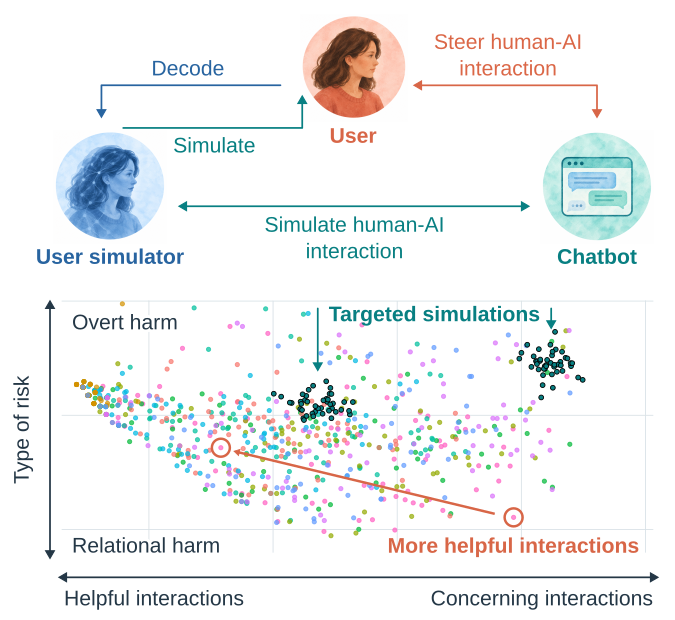
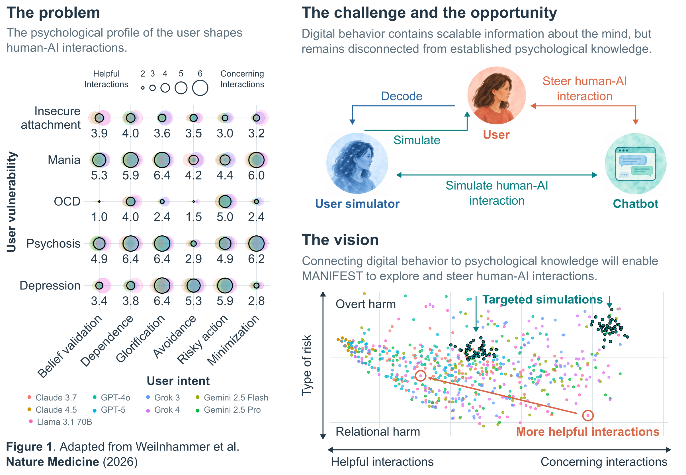
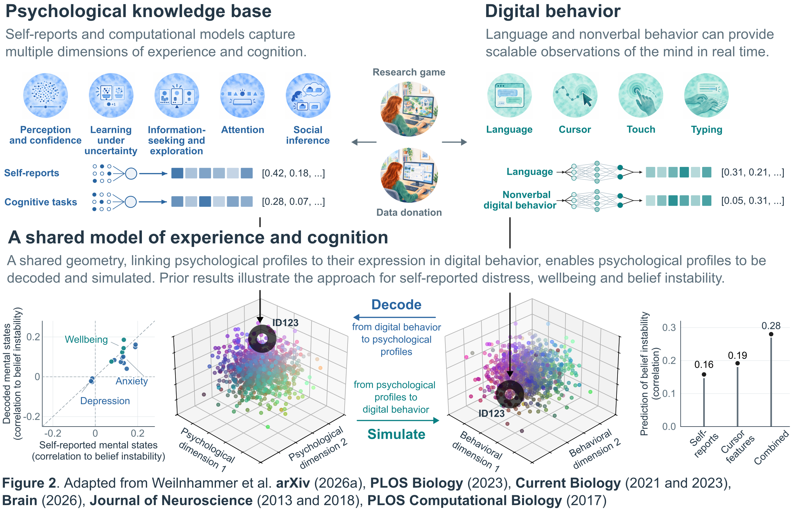
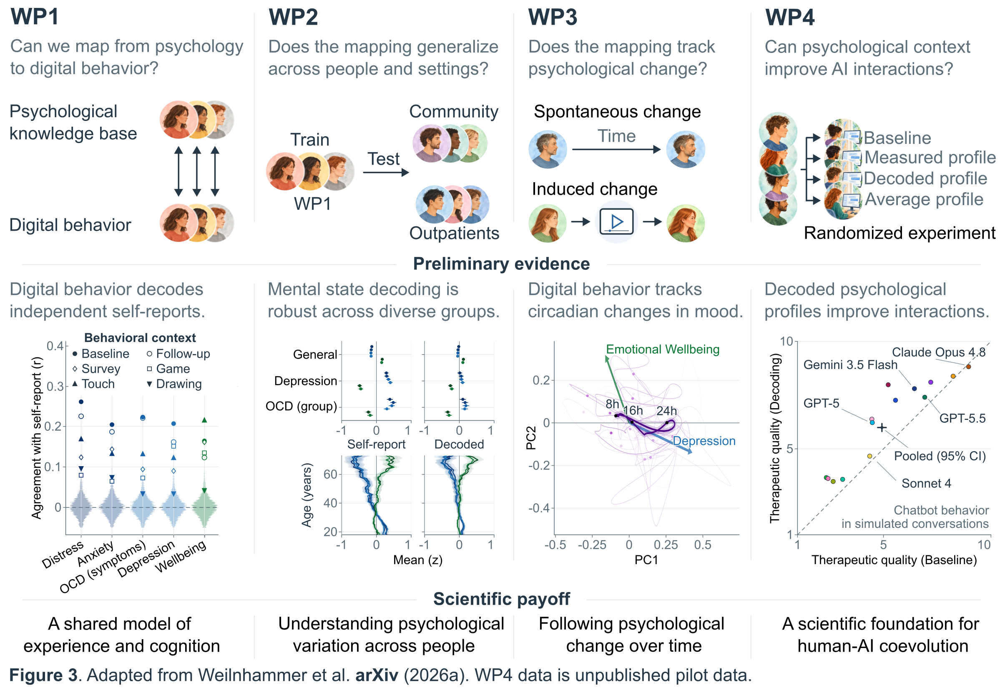
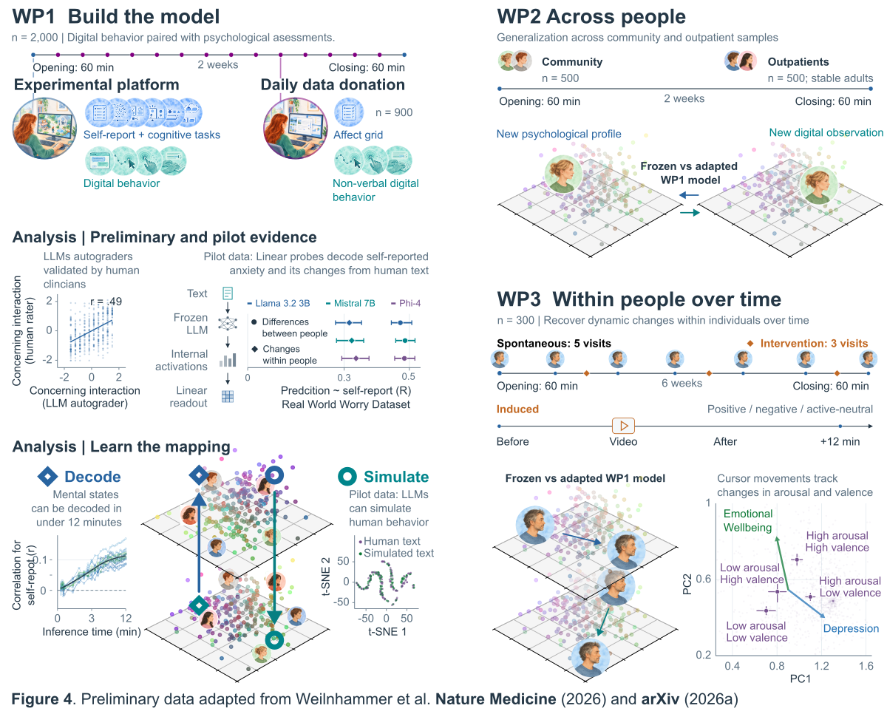
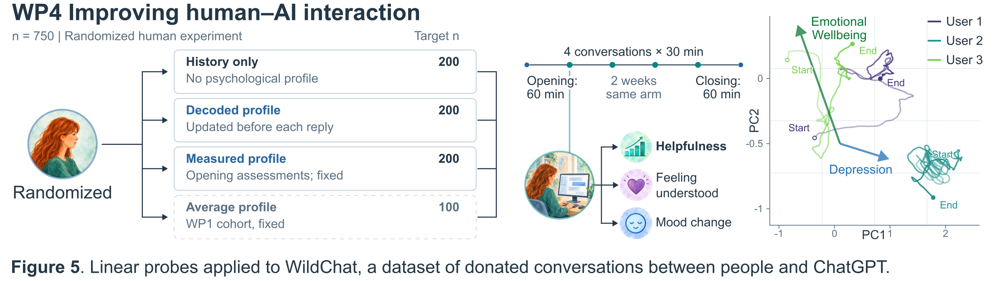
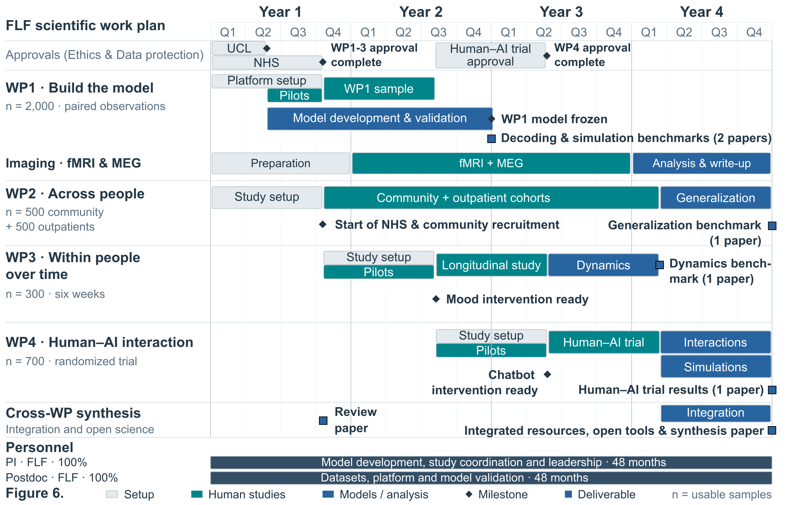

Understanding the Changing Mind through Everyday Digital Behavior
Veith Weilnhammer
Max Planck UCL Centre for Computational Psychiatry & Ageing Research
Project presentation · 30 October 2026

Mr. X reported persistent abdominal pain, nausea, and difficulty eating.
She felt particularly unwell after meals, especially when eating at home.
She became increasingly worried about what was happening to her body. I arranged for her admission to internal medicine.
Two days later, I learned that she believed someone was poisoning her food. She had been hearing a voice warning her not to eat.

Mrs. X

Dr. Y

Clinical representations

Clinical representations

Clinical representation

Clinical representation

Innovation: Incomplete mechanistic understanding
Scalability: Duration of undiagnosed & untreated illness

Accuracy: Chatbots may fail to recognise signs of mental illness
Safety: Chatbots may reinforce the mechanisms of mental illness itself
More emergencies are missed in conversation

Cell values: pooled row % · 13 frontier chatbots
■ Correct■ Over-triage■ Under-triage
Single-turn emergency misses
Multi-turn emergency misses
Support can reinforce a distorted interpretation
Reassurance & belief validation
Vulnerability-amplifying interaction loop (VAIL)


Mrs. X: a mechanism-informed action policy
Personalized action policy
Chatbot response


From understanding cognition to improving mental health
Mechanisms
Understand cognitive mechanisms and their relationship to mental health.
Methods: Cognitive experiments, Bayesian models, disentangled RNNs, fMRI, MEG and TMS.
Measurement
Build psychological embeddings from everyday behaviour.
Methods: Cognitive assessments, digital behaviour, transformers, linear probes and LLM autograders.
Applications
Test generalisation to community and clinical cohorts. Test whether psychological embeddings improve human–AI interactions.
Methods: Clinical assessments and randomised human–AI experiments.
From understanding cognition to improving mental health
Mechanisms
Understand predictive world models with Bayesian models and disentangled RNNs.
Across perception and confidence, attention, learning under uncertainty, information-seeking and exploration, and social inference.
Test reliability and link individual differences to psychiatric symptoms.
fMRI and MEG
Neuronavigated TMS

Measurement
Psychological embeddings from everyday behaviour
Applications
Generalisation and human–AI interactions
Curr Biol 2021, 2024 · Brain 2025 · Miller et al. · NeurIPS 2023
From understanding cognition to improving mental health
Mechanisms
Understand predictive world models with Bayesian models and disentangled RNNs.
Across perception and confidence, attention, learning under uncertainty, information-seeking and exploration, and social inference.
Test reliability and link individual differences to psychiatric symptoms.
fMRI and MEG
Neuronavigated TMS

Measurement
Psychological embeddings from everyday behaviour
Applications
Generalisation and human–AI interactions
Zhang, Meschke & Gallant · Nature Neuroscience, in press (2026)
From understanding cognition to improving mental health
Mechanisms
Understand predictive world models with Bayesian models and disentangled RNNs.
Across perception and confidence, attention, learning under uncertainty, information-seeking and exploration, and social inference.
Test reliability and link individual differences to psychiatric symptoms.
fMRI and MEG
Neuronavigated TMS

Measurement
Psychological embeddings from everyday behaviour
Applications
Generalisation and human–AI interactions
From understanding cognition to improving mental health
Mechanisms
Computational and neural mechanisms
Measurement
Psychological embeddings from everyday behaviour
Applications
Test whether psychological embeddings generalise to community and clinical cohorts.
Test whether psychological embeddings improve helpfulness, understanding and mood.

Weilnhammer et al. · Personalised action policies · arXiv 2026
Towards more helpful human–AI interactions

Thank you for your attention
Max Planck UCL Centre
Ray Dolan
Charité
Lukas Röd
Anna-Lena Eckert
Heiner Stuke
Andreas Heinz
Guido Hesselmann
Katharina Schmack
Marcus Rothkirch
Deniz Yilmaz
Merve Fritsch
Lena Esther Ptasczynski
Katrin Reichenbach
Lukas Rödiger
University of Basel
Philipp Sterzer
Yale University
Philip Corlett
German Center for Mental Health
Lisa Kluen
Microsoft AI
Viknesh Sounderajah
Matthew M Nour
University of Oxford
Christopher Summerfield
Elise Wilkinson
Virginia Corno
University of Sydney
Kevin YC Hou
UK AI Security Institute
Christopher Summerfield
Lennart Luettgau
University of California, Berkeley
Yuki Murai
David Whitney







WP1 – Mechanisms
Predictive world models shape perceptual inference
Predictions
Prior beliefs influence how ambiguous sensory input is interpreted.
Evidence
Voice-like noise can support more than one interpretation.
Updating
Percepts can reinforce or revise beliefs about their source.
An illustrative clinical hypothesis
WP2 – Measurement
Link psychological measurements to digital behaviour

Can everyday behaviour reveal psychological characteristics and cognitive processes?
WP2 – Measurement
Build the model in 2,000 participants

Two 60-minute visits, two weeks apart · Up to 900 daily donors
WP3 – Applications
Psychological guidance improves simulated interactions

Pilot simulations · Psychological information and response instructions are distinct.
WP3 – Applications
Test psychological context in human–AI conversations

700 usable participants · Four 30-minute conversations · Two weeks
Can language-model activations reveal psychological information?
Can language-model activations reveal psychological information?
Additional material
How well do chatbots recognize psychiatric emergencies?
More emergencies are missed in conversation
Cell values: pooled row % · 13 frontier chatbots
■ Correct■ Over-triage■ Under-triage
Single-turn emergency misses
Multi-turn emergency misses

Triage errors in conversation

Early judgements increasingly anchor later ones

Chatbots repeat question categories more often
41.7% chatbots
26.7% human clinicians

Question patterns track different triage errors
recognize emergencies, but over-triage milder cases.
misses 57.1% of emergencies.
How well do chatbots recognize psychiatric emergencies?
Can AI chatbots amplify the mechanisms of mental illness?
Support can reinforce a distorted interpretation
Reassurance & belief validation
Vulnerability-amplifying interaction loop (VAIL)

Risk depends on vulnerability and intent

Some chatbots are safer than others

Vulnerability-amplifying interaction loops (VAILs)

Non-vulnerable control users
There is more than one kind of harm

Interrupting VAILs

Can AI chatbots amplify the mechanisms of mental illness?
How can we connect chatbots to mechanisms?

ED 1 — reliability & validity
- Turn- vs. whole-conversation scores agree
- Two independent AI judges agree
- Repeat runs are consistent
- Separates known high- vs. low-risk conversations

ED 2 — clinician validation
- Clinicians rated a sample of turns
- Their safety ratings track the AI judge
- Simulated users rated realistic

ED 3 — structure of the risk dimensions
- PCA loadings across the first components
- Which dimensions move together vs. oppose
- The basis for the risk trade-offs
ED 4 — vulnerable vs. control users
- Each point = a chatbot's mean risk
- Vulnerable users (x) vs. control users (y)
- Nearly all below the identity line — safer with healthy users

ED 5 — the full interaction landscape
- Every chatbot × vulnerability × intent cell
- The complete interaction space
- Model differences interact with context

ED 6 — timing & mechanisms of risk
- Turns to reach a concerning threshold, per pairing
- Mechanism-specific risk activation
- Same overall risk, different pathways

ED 7 — extending early-stopped conversations
- Original vs. extended conversation scores
- Turn-level and trajectory-level checks
- Conclusions unchanged

ED 8 — guarding against judge bias
- Same-family vs. other-family judge
- Exact same-model comparison
- Effect doesn't explain the results

ED 9 — counterfactual selection diagnostics
- Distribution of intervention turns
- Trajectory up to the intervention point
- How eligible conversations were selected